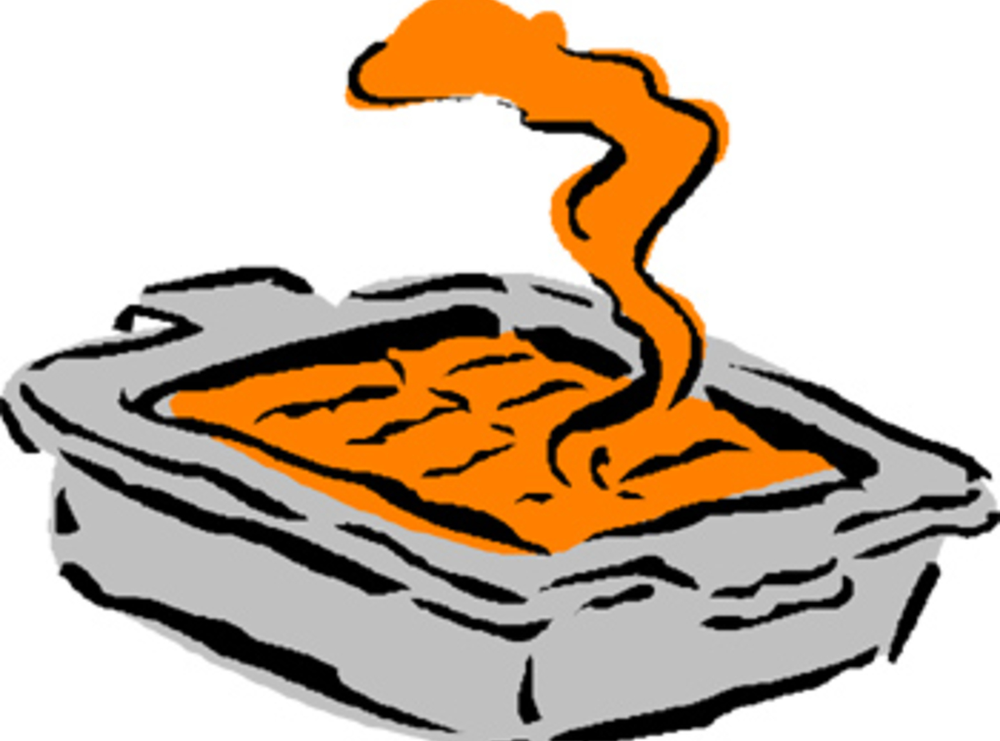

All Recipes
Sweet Potato Casserole

Description
Sweet potato casserole is a beloved dish, especially around the holidays.
It's rich, creamy, and balanced between sweet and savory, with a crunchy pecan topping and gooey, toasted marshmallows.
Ingredients
For the Sweet Potato Base:
- 4 medium sweet potatoes, peeled and cubed
- ½ cup unsalted butter, melted
- ½ cup brown sugar
- ¼ cup milk
- 2 eggs
- 1 teaspoon vanilla extract
- ½ teaspoon cinnamon
- ¼ teaspoon nutmeg
- ¼ teaspoon salt
For the Pecan Topping:
- ½ cup chopped pecans
- ½ cup brown sugar
- ¼ cup unsalted butter, melted
- ¼ cup all-purpose flower
For the Marshmallow Topping:
- 1 ½ cups mini marshmallows
Steps to Cook Sweet Potato Casserole:
- Prepare the sweet potatoes: Boil cubed sweet potatoes in a large pot of water until fork-tender, about 15-20 minutes. Drain and mash until smooth.
- Make the filling: In a mixing bowl, combine the mashed sweet potatoes with melted butter, brown sugar, milk, eggs, vanilla extract, cinnamon, nutmeg, and salt. Stir until well blended.
- Transfer to baking dish: Pour the sweet potato mixture into a greased 9x13-inch baking dish, smoothing it out evenly.
- Make the pecan topping: In a separate bowl, mix chopped pecans, brown sugar, melted butter, and flour until a crumbly texture forms.
- Add toppings: Sprinkle the pecan mixture evenly over the sweet potato base. Then, top with mini marshmallows.
- Bake: Place the casserole in a preheated oven at 350°F (175°C) and bake for 25-30 minutes, or until the marshmallows are golden brown and slightly toasted.
- Cool and serve: Let the casserole rest for a few minutes before serving to allow the layers to set.